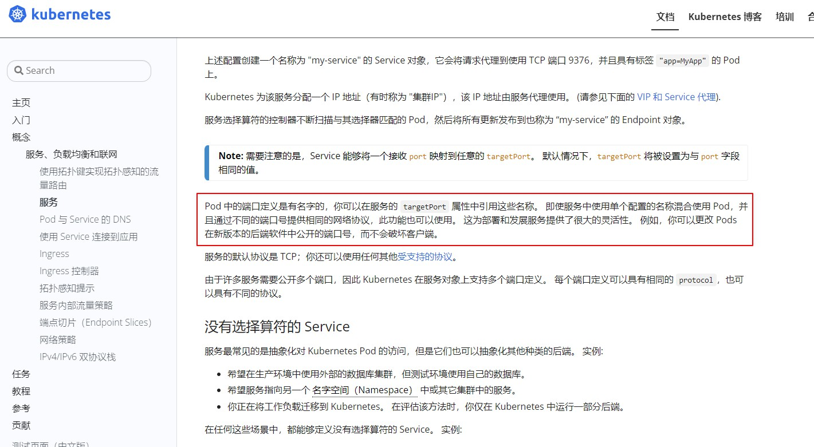

service绑定后端endpoint异常
问题现象
问题现象是k8s集群内通过service访问某个服务报错no healthy upsteam，这里我用一个nginx服务来讲下这个问题
排查思路
nginx的deploy和svc对应的yaml如下
apiVersion: apps/v1
kind: Deployment
metadata:
labels:
k8s-app: nginx
qcloud-app: nginx
name: nginx
namespace: weixnie
spec:
progressDeadlineSeconds: 600
replicas: 1
revisionHistoryLimit: 10
selector:
matchLabels:
k8s-app: nginx
qcloud-app: nginx
strategy:
rollingUpdate:
maxSurge: 1
maxUnavailable: 0
type: RollingUpdate
template:
metadata:
creationTimestamp: null
labels:
k8s-app: nginx
qcloud-app: nginx
spec:
containers:
- image: nginx:latest
imagePullPolicy: Always
name: nginx
resources:
limits:
cpu: 500m
memory: 1Gi
securityContext:
privileged: false
terminationMessagePath: /dev/termination-log
terminationMessagePolicy: File
dnsPolicy: ClusterFirst
imagePullSecrets:
- name: qcloudregistrykey
restartPolicy: Always
---
apiVersion: v1
kind: Service
metadata:
labels:
k8s-app: nginx
qcloud-app: nginx
name: nginx-test
namespace: weixnie
spec:
ports:
- name: 80-80-tcp
port: 80
protocol: TCP
targetPort: http
selector:
k8s-app: nginx
qcloud-app: nginx
sessionAffinity: None
type: ClusterIP
这里apply后，可以直接通过svc访问下nginx
[root@VM-55-5-tlinux ~]$ k get svc,pod -o wide | grep nginx
service/nginx-test ClusterIP 10.55.255.43 <none> 80/TCP 7m46s k8s-app=nginx,qcloud-app=nginx
pod/nginx-6ccd9d7969-f4rfj 1/1 Running 1 16d 10.55.1.34 172.16.55.5 <none> <none>
[root@VM-55-5-tlinux ~]# curl 10.55.255.43
no healthy upsteam
报错返回的是no healthy upsteam，那后端的pod服务是否正常，直接访问pod看看
[root@VM-55-5-tlinux ~]# curl 10.55.1.34
<!DOCTYPE html>
<html>
<head>
<title>Welcome to nginx!</title>
<style>
html { color-scheme: light dark; }
body { width: 35em; margin: 0 auto;
font-family: Tahoma, Verdana, Arial, sans-serif; }
</style>
</head>
<body>
<h1>Welcome to nginx!</h1>
<p>If you see this page, the nginx web server is successfully installed and
working. Further configuration is required.</p>
<p>For online documentation and support please refer to
<a href="http://nginx.org/">nginx.org</a>.<br/>
Commercial support is available at
<a href="http://nginx.com/">nginx.com</a>.</p>
<p><em>Thank you for using nginx.</em></p>
</body>
</html>
直接pod正常，说明pod本身是正常的，问题是出在svc的转发上，这里先describe svc看下
[root@VM-55-5-tlinux ~]$ k describe svc nginx-test
Name: nginx-test
Namespace: weixnie
Labels: k8s-app=nginx
qcloud-app=nginx
Annotations: <none>
Selector: k8s-app=nginx,qcloud-app=nginx
Type: ClusterIP
IP: 10.55.255.43
Port: 80-80-tcp 80/TCP
TargetPort: http/TCP
Endpoints: <none>
Session Affinity: None
Events:
Type Reason Age From Message
---- ------ ---- ---- -------
Normal EnsuringService 11m service-controller Deleted Loadbalancer
Normal EnsureServiceSuccess 11m service-controller Service Sync Success. RetrunCode: S2000
从describe的信息可以发现，Endpoints是空的，为什么svc没绑定成功到endpoint呢？这里端口设置没问题，Selector的label和pod也是能匹配上的。
这里又仔细的看了下svc的yaml配置，发现TargetPort是用的http这个名称，而不是写的端口，翻了下官网文档

从文档说明来看，如果svc的TargetPort配置成非端口，用名称，需要先在deploy里面定义才行，这里deploy是没有定义这个端口名称的，所以svc配置成名称，导致svc无法正确选择后端endpoint。
解决方案
上面分析了，svc没绑定后端endpoint是以为TargetPort设置成了名称，那么这里解决方案就有2个
- 修改svc的TargetPort的配置，改成端口
- 在deploy里面定义下端口的名称